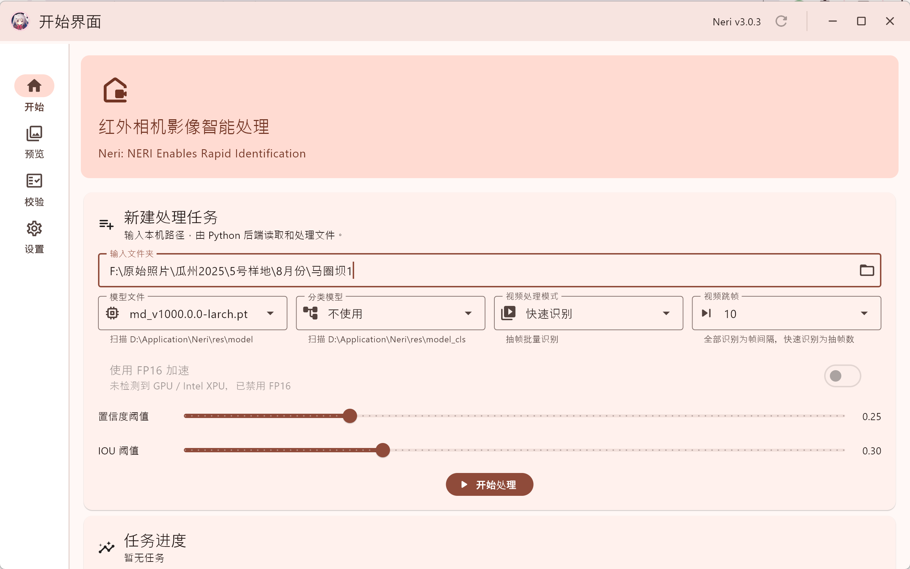
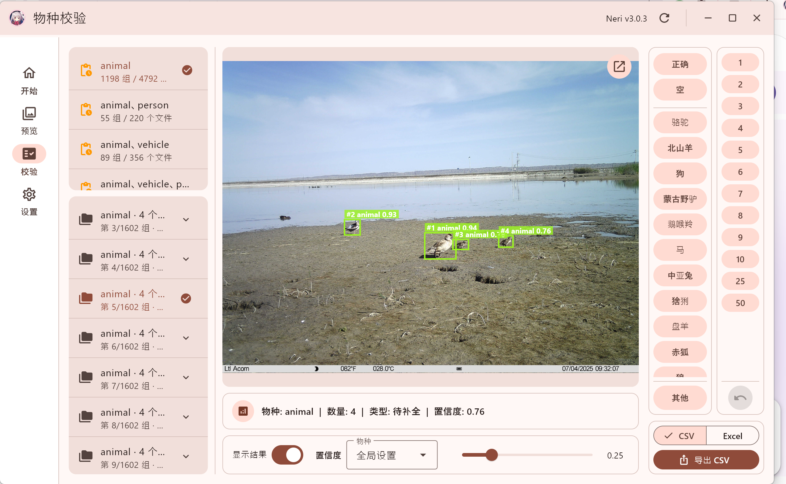
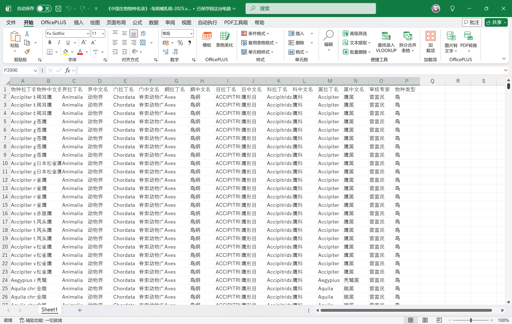

下一代野生动物
智能识别与管理工作流
Neri 专为生态研究与野生动物保护打造。集成本地 AI 目标检测模型，自动提取图像 EXIF 并在本地比对《中国生物物种名录》（鸟纲/哺乳纲），提供一站式的数据处理与导出体验。
下载桌面端环境
支持 Flutter 前端与 Python 后端无缝协同。
功能与界面展示
采用全新的 Material Design 3 设计，打造现代化的 Flutter 桌面应用。



开发动态与更新
Neri 一直在快速进化中。
✨ v3.0.3-beta
2026.05.23
最新大版本- 🖍️内容更新：设置页“软件更新”顶部新增当前版本信息；“项目信息”调整为“关于”，并提供版本号、更新说明、反馈建议和源代码入口；连续点击版本号可开启调试模式。
- 🧪调试增强：新增调试模式页面，可查看前端版本、后端版本、后端地址、运行平台、GPU/PyTorch 状态、YOLO 依赖状态；支持复制调试信息、查看已安装 Python 库以及读取软件日志，便于定位环境和依赖问题。
- ✅体验优化：优化启动连接后的全局加载状态，尽量等待初始页面数据加载完成后再关闭加载条；优化程序关闭流程，在 Python 后端已关闭或不可用时减少退出等待；未检测到可用 GPU 时自动禁用 FP16；开始界面删除任务提示改为显示处理路径和当前状态。
- 🧭校验优化：校验界面的物种分组会按当前置信度重新计算，低于阈值而被过滤的检测会归入过滤后的分组；当整组照片都低于阈值时直接显示为“空”，避免继续停留在原物种分组。
- 🔧问题修复：修复 Windows 端连接后端后可能闪退的问题；修复后端父进程监听在部分权限场景下可能误判退出的问题；调整主界面页面承载方式，降低 Windows 可访问性树更新异常对界面的影响。
v3.0.2-beta
2026年05月20日
- 🖍️内容更新：校验界面支持批量撤回，可一次撤回最近多步校验操作；设置 → 基础设置新增“撤回步数”配置，支持设置一次撤回的步数；后端新增批量校验标记接口，用于快速标记、批量标记和批量撤回。
- ✅体验优化：快速标记和批量标记改为批量提交，减少大量单项请求导致的加载末尾卡顿；校验界面空状态下，“重新获取”按钮会在加载时显示加载状态；检测依赖未安装时，检测设置中的“安装依赖”会弹窗确认并自动检测安装，不再跳转到环境维护；开始界面在检测依赖未安装时，会禁用模型文件、分类模型、视频处理、FP16、置信度、IOU 等检测相关设置；校验界面“其他”按钮高度与刷新/撤回按钮保持一致，物种按钮和数字按钮恢复原高度。
- 🔧问题修复：修复撤回只能撤回上一步的问题；修复校验界面部分按钮高度不一致的问题；修复检测依赖缺失时，设置页安装路径不够直观的问题
v3.0.1-beta
2026年05月18日
- 🖍️内容更新：移植部分功能，完善部分交互。
- 🔧问题修复：修复了部分bug。
v3.0.0-beta
2026年05月17日
- 🖍️内容更新：使用flutter编写md3风格的前端，应用界面流畅程度增加。当前版本为beta版本，大部分功能已迁移完成但尚未经过测试，请谨慎使用。
使用文档与配置指南
快速了解 Neri 的核心功能与加速配置。
快速导航
info项目简介
Neri (NERI Enables Rapid Identification) 是一款专为处理红外相机影像数据设计的智能桌面应用。它基于 YOLO (You Only Look Once) 目标检测模型，能够高效、自动地识别和处理大批量由红外相机拍摄的野生动物照片。本工具旨在为生态保护工作者、野生动物研究人员和爱好者提供一个强大的数据整理和分析平台，将繁琐的手动筛选工作自动化，极大地提升科研和监测效率。
settings核心检测设置
模型加速选项
- 使用FP16加速： 使用半精度浮点数进行推理，可以加快速度但可能会略微降低精度。需要兼容的 NVIDIA GPU。
高级检测选项
- 使用数据增强 (TTA)： 在测试时使用数据增强，通过对输入图像进行多种变换并综合结果，可能会提高准确性，但会显著降低处理速度。
- 使用类别无关 NMS： 在所有类别上一起执行 NMS，对于检测多种相互重叠的物种可能有用。
视频检测设置
- 帧间隔： 设置视频处理时的跳帧间隔，以加快处理视频的速度。
- 最低帧数比例： 如果某个目标（TrackID）在视频中出现的总帧数占视频总帧数的比例过低，则该目标将被视为误检或无效目标，不会在结果中显示。
memory使用 CUDA 加速
建议（但非强制）你的 Windows 系统配备 NVIDIA GPU，因为这样能使用更高精度的模型，且更加快速。
auto_awesome 自动安装机制
在第一次运行程序的时候会自动检测 NVIDIA 显卡和 CUDA 并且尝试自动安装对应版本的 Pytorch，若安装失败，可尝试手动安装。
如何查看 CUDA 版本并且安装 CUDA 支持的 Pytorch？
- 右键点击桌面，选择 “NVIDIA 控制面板”。
- 在控制面板的菜单栏中，选择 “帮助”，然后点击 “系统信息”。
- 在弹出的窗口中查看组件选项卡，即可找到支持的 CUDA 版本信息。